5:30
Open doors
6:15 — Sarah Karp
What's in a name? How Design Systems lead to better terminology decisions
Have you ever wondered why you “favourite” one thing but “star” something else? What role do Design System teams play when naming a brand new feature or renaming a legacy concept? Sarah Karp, a Content Design Manager at Atlassian, shares what goes on behind the scenes of a product terminology decision. In this talk, you’ll learn how to validate a terminology choice, get buy-in from stakeholders, and streamline naming decisions into a process that can be shared across entire organisations.
6:45 — Alex Page
Names and positive culture
Communication is hard, what we name things affects how well we communicate. Simple interactions like getting a haircut or ordering an ice cream can increase anxiety due to communication. Poor communication can change outcomes, how things are perceived and how they are used. When building a design system we have to name a lot of things. Some times the names we give should be functional and understandable and other times there are opportunities to be creative and create a positive culture.
7:15 — Ben Buchanan
The Naming of Things
Giving a name to something is a powerful action. It's part of human nature to attach meaning and expectation to people, objects and ideas just from the name they have been given. For design systems this impacts everything from coding standards to the efficiency of collaboration between teams. How do you define components in a way all stakeholders can understand? How do you set APIs that will last? It all starts with naming things.
Design System meetup Sydney v4.0.0. Three 30min talks about terminology, positive culture and naming by Sarah Karp, Alex Page and Ben Buchanan.
Venue
Sydney, NSW 2000
You'll find the Zip Co office at 10 Spring Street in the Sydney CBD off Pitt Street, several blocks up from Circular Quay — we’re a few minutes’ walk from Martin Place, Wynyard or Circular Quay stations.
(Turn right at the Optus store on the corner)
Sponsors (Bloody legends)
We’re building our design team and system, so we’re excited to support the DS meetup.

We're a tech design and development studio, and the team behind Keystone, react-select, as well as the React Sydney.

Small batch made-to-order gelato using high quality ingredients in Sydney, Australia.